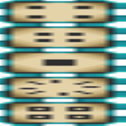

Ars Technica
附属模组
Ars Technica 附属模组
这是什么
需要 新生魔艺 、 元素魔艺 、 Curios API 、 机械动力 还有 StarbuncleMania （本模组版本1.2.0+新需）才能使用此模组。
命名空间：
ars_technica 1.20.1 版本：本页物品与配方直接取自该版本的 jar。全部物品16
Amethyst Dustars_technica:amethyst_dust
Calibrated Precision Mechanismars_technica:calibrated_precision_mechanism
没有工作台/机器配方
Gargantuan Experience Gemars_technica:gargantuan_experience_gem
Giant Experience Gemars_technica:giant_experience_gem
Music Discars_technica:pocket_factory_disc
没有工作台/机器配方
Precise Relayars_technica:precise_relay
没有工作台/机器配方
Nether Quartz Dustars_technica:quartz_dust
Runic Spannerars_technica:runic_spanner
没有工作台/机器配方
Source Motorars_technica:source_engine
Spy Monoclears_technica:spy_monocle
没有工作台/机器配方
Technomancer's Bootsars_technica:technomancer_boots
Technomancer's Robesars_technica:technomancer_chestplate
Technomancer's Hatars_technica:technomancer_helmet
Technomancer's Leggingsars_technica:technomancer_leggings
Pressurears_technica:thread_pressure
没有工作台/机器配方
Focus of Transmutationars_technica:transmutation_focus
没有工作台/机器配方